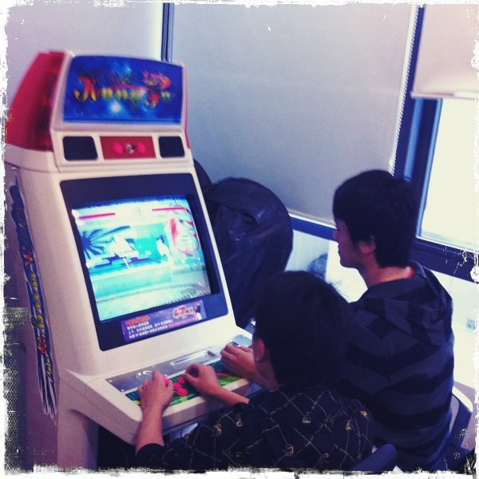
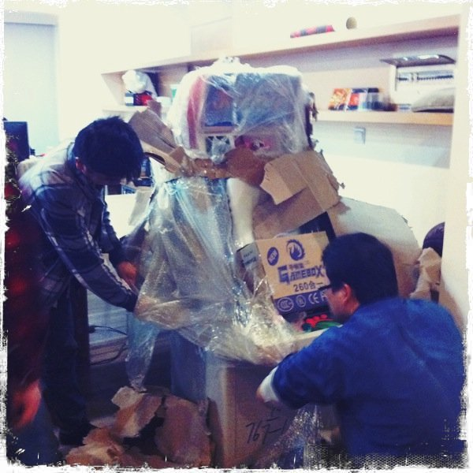
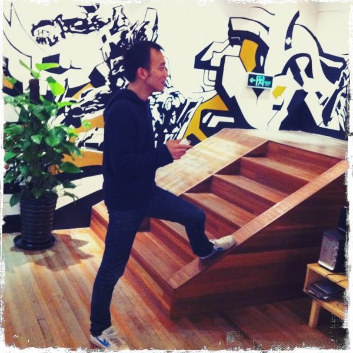
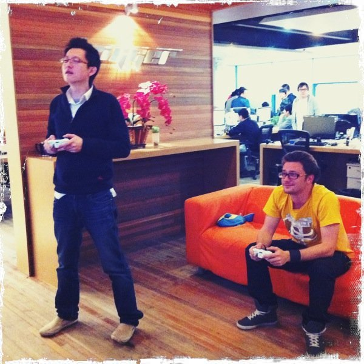

Sun, 24 Apr 2011 04:16:01 · games · tekken · trigger · arcade
some pix of trigger shanghai team playing at




Some pix of Trigger (Shanghai) team playing at Tekken Thursday Tourney last week and the unpacking of our new Arcade Machine! What’s more, that machine has about 200+ games on it, so get your coins ready and the game is on!